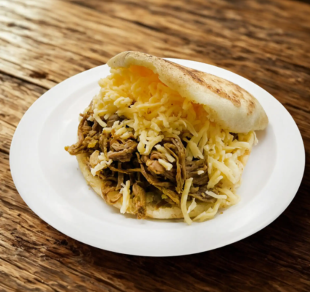

Home
La Pelua

Description
La Pelua is a popular and simple Venezuelan arepa filling.
It's a delicious sweet-and-salty combination of shredded beef and yellow cheese.
The name "Pelua" means "hairy" in slang, referring to the stringy look of the beef and melted cheese mixed together.
Ingredients
- -Precooked corn flour (e.g., Harina P.A.N.)
- - Warm water
- - Salt
- -Oil (for cooking)
- -Melted Cheese
- -Shredded Beef or chicken
Step by Step
- Meassure the Ingredients
- Mix the Dough
- Knead and Rest
- Shape the Arepas
- Coon on Skillet
- Bake for Fluffiness(Optional)
- Slice and Fill